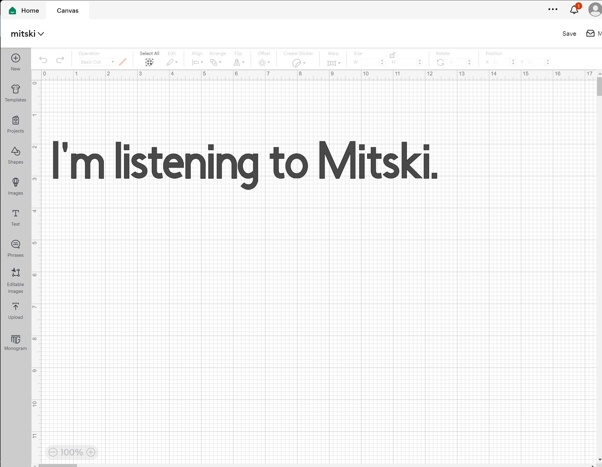

For our introduction to CNC, my assignment was to vinyl cut something and I immediately had an idea. One of my favorite music artists, Mitski, released a merch line that consited of a hat that said "Listening to Mitski."(pictured below) Instead of paying $40 for that hat, I decided i could just make a shirt myself.
My design was just made using the Cricut software and using text. after importing it and cutting, I had to painstakingly peel away all the extra vinyl that i didnt need. Eventually, i had my design and I heat pressed it onto a black T-shirt. 
For my Press fit cardboard project I tried my best to make a Formula 1 car, and it was way more than I bargained for.
Unfortunately, Most of my design history was deleted after trying to delete the reference images I used, but I based my design on the Aryton Senna era of F1, using these images for inspiration
After sketching out some basic pieces i gave up on making it in 3d and hoped that everything would just work out. So I started sketching out the body and the front wing.
Now in theory I should have a laser cut Formula 1 car. If I were to go back and do this again, I would plan it much better instead of trying to use an image of an f1 car as a projection, and I would actually set parameters like I was warned a Crillion times to do.
This is one of the most stressfull projects I've done. It's not the first car I've designed in fusion, but my lack of organization on this projectmade it a nightmare towards the end of the project. After laser cutting and trying to assemble my car, I realized there were multiple holes I forgot to cut.
To get the wheels to look the way I want without glue, I went to home depot and pciked up a 1/4 inch Wood dowel do be the axle.
And here's the finished project :)
(p.s. Dont' try to sketch directly on an image in Fusion, once you delete the image it will break the entire sketch.)